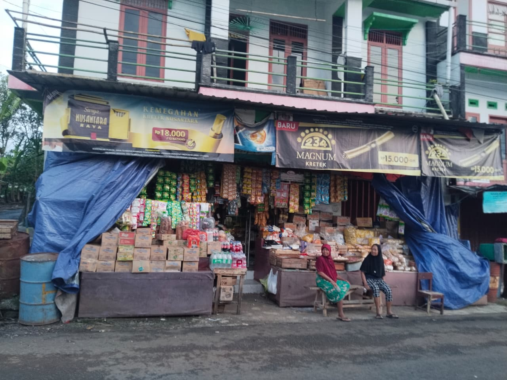

Informasi UMKM

Kelurahan Wangon di Banjarnegara memiliki ekosistem UMKM yang cukup dinamis, terutama didorong oleh sektor kuliner, industri rumahan, dan jasa. Sebagaimana wilayah kelurahan pada umumnya, UMKM di sini sering kali terorganisir melalui kelompok-kelompok usaha kecil yang dibina oleh pihak kelurahan atau instansi terkait di tingkat kabupaten.
Berikut adalah gambaran umum jenis UMKM yang berkembang di Kelurahan Wangon:
1. Sektor Kuliner dan Makanan Olahan
Sektor ini merupakan yang paling dominan di tingkat lokal. Beberapa jenis produk yang sering ditemui meliputi:
- Makanan Ringan (Camilan): Berbagai jenis keripik (singkong, pisang, talas) dan makanan tradisional seperti rengginang dan peyek.
- Olahan Kedelai: Mengingat Banjarnegara memiliki banyak pengrajin tempe dan tahu, beberapa pelaku usaha di Kelurahan Wangon juga bergerak di bidang ini.
- Katering dan Warung Makan: Usaha skala rumah tangga yang melayani kebutuhan konsumsi harian masyarakat maupun acara-acara tertentu.
2. Industri Kreatif dan Kerajinan
Walaupun sentra besar seperti Batik Gumelem atau Keramik Klampok berada di kecamatan lain, di Kelurahan Wangon terdapat pelaku usaha yang bergerak di bidang:
- Kerajinan Tangan: Pembuatan souvenir atau hantaran pernikahan skala rumahan.
- Konveksi Kecil: Penjahit rumahan yang menerima pesanan seragam atau pakaian jadi untuk pasar lokal.
3. Sektor Jasa
UMKM di bidang jasa juga tumbuh subur untuk melayani kebutuhan warga di dalam dan sekitar kelurahan:
- Jasa Servis Elektronik dan Bengkel: Melayani perbaikan kendaraan bermotor atau alat rumah tangga.
- Laundry Kiloan: Sangat berkembang seiring dengan mobilitas warga yang tinggi.
- Percetakan dan Foto Copy: Melayani kebutuhan administrasi warga dan pelajar.
Upaya Pengembangan UMKM Lokal
Untuk mendukung pertumbuhan UMKM tersebut, biasanya pihak kelurahan melakukan beberapa langkah strategis, di antaranya:
- Pendataan melalui Forum UMKM: Agar pelaku usaha mendapatkan akses informasi mengenai bantuan modal, pelatihan, atau sertifikasi halal.
- Pemanfaatan Platform Digital: Mendorong pelaku usaha untuk mulai menggunakan media sosial sebagai sarana promosi.